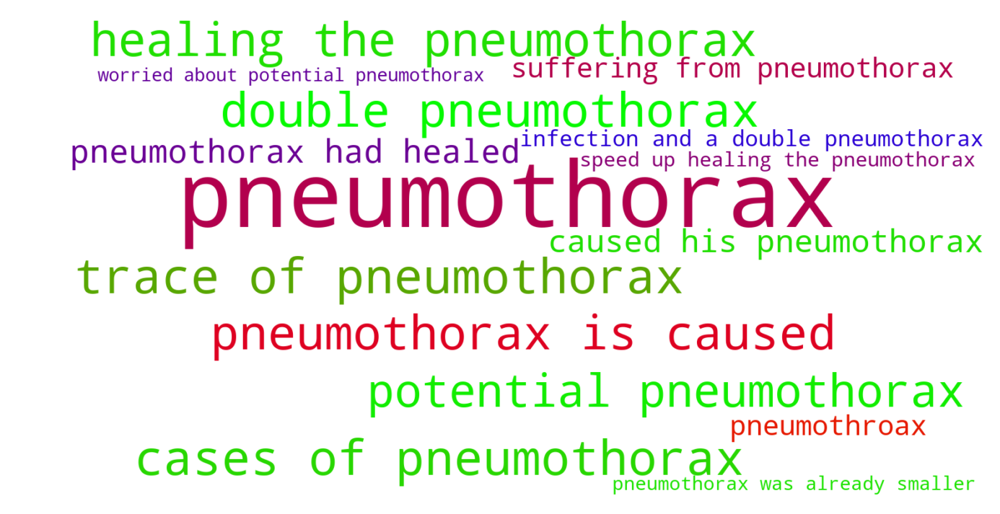

Jump to section:
Samples from Social CorpusHits per UMLS Alias on Social Corpus
Word Cloud Comparison
Embedding Space Comparison
Nearest Neighbors by Semantic Type
Related Analysed Concepts
Samples from Social Corpus
Baby had immature lungs , pneumothorax , sepsis , and other issues .
Confidence: 1.000. Reddit link
He was on oxygen all night to try and speed up healing the pneumothorax .
Confidence: 0.643. Reddit link
The attending then stops him and tells us that because 30 % of cases of pneumothorax in the presence of meconium are due to infection we have to do an automatic seven days of antibiotics and we couldn't take him until that was done .
Confidence: 0.816. Reddit link
He sustained injuries from the delivery , right sides facial palsy , broken right clavicle , small subarachnoid hemorrhage , and spontaneous pneumothorax .
Confidence: 1.000. Reddit link
She was suffering from pneumothorax , premature lungs , grade 3 and 4 brain bleed , and her PH was so acidic .
Confidence: 0.667. Reddit link
They just said he will need a procedure for a pneumothroax and I'm just .. .
Confidence: 0.667. Reddit link
In september our son ended up in the hospital briefly for a spontaneous pneumothorax ( spelling is hard ) .
Confidence: 1.000. Reddit link
Only problem was the 1st one got pneumothorax .
Confidence: 1.000. Reddit link
Now we're 9 weeks out and his lungs have " no trace of pneumothorax " and we are as happy as can be !
Confidence: 0.816. Reddit link
By around 10pm Saturday the 29th ( almost 24 hours after his birth ) the pneumothorax had healed itself and his breathing was normal so he finally lost the oxygen hood and we could hold him and I could attempt breastfeeding directly .
Confidence: 0.722. Reddit link
Hits per UMLS Alias on Social Corpus
-
pneumothorax
31 hits
-
air pleural space
0 hits
-
collapsed lung
0 hits
-
free air chest outside lung
0 hits
-
pneumothorax nos
0 hits
-
pneumothorax disorder
0 hits
Word Cloud Comparison
Keywords matching C0032326
Keywords matched against concept. Word size represents frequency.
Keywords co-occurring with C0032326
Co-occurrence is measured at the document-level (i.e. Reddit submissions). Frequencies are normalized to account for keywords common to all CUIs.
Embedding Space Comparison
T-SNE comparison for word embeddings learned from medical domain (EuroPMC) and social media (Reddit) independently.
Pearson correlation for union of closest 1000 neighbors: -0.218
Nearest Neighbors by Semantic Type
Most similar concepts in each of the selected UMLS semantic types. Based on concept embeddings from social corpus.
T047 (Disease or Syndrome)
-
C0032326
Pneumothorax
1.000 Similarity
-
C0032285
Pneumonia
0.751 Similarity
-
C0036690
Sepsis
0.721 Similarity
-
C0008495
Chorioamnionitis
0.707 Similarity
-
C0042384
Vasculitis
0.695 Similarity
-
C0276527
Aids with pneumonia
0.688 Similarity
-
C0949083
Hospital acquired pneumonia
0.680 Similarity
-
C1412002
Walking pneumonia
0.663 Similarity
T023 (Body Part, Organ, or Organ Component)
-
C0024109
Lung
0.688 Similarity
-
C0225730
Left lung
0.655 Similarity
-
C0040578
Trachea
0.640 Similarity
-
C0034052
Pulmonary arteries
0.618 Similarity
-
C0034086
Pulmonary valve
0.614 Similarity
-
C1268107
Lung part
0.596 Similarity
-
C0588054
Lymph nodes neck
0.594 Similarity
-
C0545792
Kidney liver
0.582 Similarity
T046 (Pathologic Function)
-
C0269810
Sepsis during labor
0.666 Similarity
-
C0034063
Pulmonary edema
0.653 Similarity
-
C0034065
Pulmonary embolism
0.650 Similarity
-
C4075684
Hypoxemia during surgery
0.649 Similarity
-
C0007642
Cellulitis
0.634 Similarity
-
C0013922
Embolism
0.634 Similarity
-
C0700198
Aspirated
0.631 Similarity
-
C0393391
Infection after injection
0.626 Similarity
T061 (Therapeutic or Preventive Procedure)
-
C0040590
Tracheotomy
0.661 Similarity
-
C0021925
Intubation
0.648 Similarity
-
C0349707
Aspiration
0.633 Similarity
-
C0199451
Cpap
0.633 Similarity
-
C1260866
Blood oxygenator
0.630 Similarity
-
C0020674
Hypothermia induced
0.611 Similarity
-
C0553891
Extubate
0.601 Similarity
-
C2114838
Prophylactic antibiotics prescribed
0.588 Similarity
T039 (Physiologic Function)
-
C0035203
Ventilation
0.641 Similarity
-
C1456599
Lungs breathing
0.547 Similarity
-
C0035245
Lung function
0.476 Similarity
-
C0232338
Blood flow
0.473 Similarity
-
C3179159
Sedative effects
0.456 Similarity
-
C0232851
Flow urine
0.453 Similarity
-
C0743925
Fetal growth
0.418 Similarity
-
C0442695
Bearing down
0.410 Similarity
T074 (Medical Device)
-
C0042497
Respirator
0.632 Similarity
-
C0030067
Oxygenator
0.626 Similarity
-
C3696780
Tube oxygen
0.622 Similarity
-
C0087153
Ventilator
0.612 Similarity
-
C0462877
Oxygen giving set
0.606 Similarity
-
C0179931
Aorta clamped
0.562 Similarity
-
C0454152
Blocking kidney
0.562 Similarity
-
C3879150
Vascular booties
0.559 Similarity
T005 (Virus)
-
C0597404
Respiratory virus
0.632 Similarity
-
C3743464
Mycobacteriophage whirlwind
0.627 Similarity
-
C3768023
Mycobacteriophage conspiracy
0.518 Similarity
-
C0086776
Parvovirus
0.496 Similarity
-
C0599652
Leaky virus
0.495 Similarity
-
C0035236
Rsv
0.486 Similarity
-
C4415400
Phage wrath
0.471 Similarity
-
C4433204
King virus
0.466 Similarity
T042 (Organ or Tissue Function)
-
C0231940
Oxygenation
0.621 Similarity
-
C1160388
Respiratory tube development
0.604 Similarity
-
C0232102
Blood fluidity
0.521 Similarity
-
C0005778
Clotting
0.519 Similarity
-
C0042396
Vasospasm
0.508 Similarity
-
C0032058
Placentation
0.501 Similarity
-
C4250378
Neural induction
0.492 Similarity
-
C0232804
Kidney function
0.480 Similarity
T031 (Body Substance)
-
C0225379
Upper respiratory fluid
0.620 Similarity
-
C0238626
Amniotic meconium
0.569 Similarity
-
C0007806
Spinal fluid
0.567 Similarity
-
C0012621
Discharge
0.553 Similarity
-
C0370199
Aspirate
0.551 Similarity
-
C1549095
Brain cyst fluid
0.528 Similarity
-
C0025047
Meconium
0.520 Similarity
-
C3496630
Swab from uterus
0.520 Similarity
T184 (Sign or Symptom)
-
C0476273
Respiratory distress
0.617 Similarity
-
C1269642
Pain from metastases
0.585 Similarity
-
C0003578
Apnea
0.583 Similarity
-
C0553668
Breathing labor
0.581 Similarity
-
C0015967
Fever
0.579 Similarity
-
C0848538
Fluid lung
0.564 Similarity
-
C0558489
Renal pain
0.560 Similarity
-
C0032781
Post nasal drip
0.557 Similarity
T201 (Clinical Attribute)
-
C0429622
Oxygen supply
0.613 Similarity
-
C0231832
Breathing rate
0.609 Similarity
-
C0035234
Breathing sound
0.528 Similarity
-
C0442709
End diastolic
0.486 Similarity
-
C0521982
Successful treatment
0.481 Similarity
-
C1285995
Measure uterine contractions
0.459 Similarity
-
C0012655
Predisposition
0.456 Similarity
-
C0007165
Heart output
0.453 Similarity
T019 (Congenital Abnormality)
-
C0265783
Underdeveloped lung
0.602 Similarity
-
C0000768
Birth defect
0.595 Similarity
-
C0266449
Brain malformation
0.585 Similarity
-
C0003492
Coarctation
0.575 Similarity
-
C0344735
Septum primum defect
0.566 Similarity
-
C0392005
Bilateral cleft lip
0.566 Similarity
-
C0265865
Midline heart
0.553 Similarity
-
C0332941
Corrected transposition
0.545 Similarity
T032 (Organism Attribute)
-
C0805393
Breathing spontaneous
0.588 Similarity
-
C0949285
Antibiotic resistance
0.518 Similarity
-
C0026578
Mosaicism
0.444 Similarity
-
C0019425
Heterozygous
0.441 Similarity
-
C0518035
Children growth
0.412 Similarity
-
C3831006
Adjusted age
0.378 Similarity
-
C0017504
Gestational age
0.374 Similarity
-
C0031911
Pigment
0.373 Similarity
T190 (Anatomical Abnormality)
-
C0016169
Sinus
0.586 Similarity
-
C3887590
Stricture ureter
0.531 Similarity
-
C4025734
Anomaly scalp
0.523 Similarity
-
C0266785
Umbilical cord issue
0.502 Similarity
-
C0019294
Inguinal hernia
0.489 Similarity
-
C0149952
Ovary torsion
0.472 Similarity
-
C0281892
Left hernia
0.460 Similarity
-
C0240063
Keyhole iris
0.453 Similarity
T044 (Molecular Function)
-
C0369768
Oxygen saturation
0.575 Similarity
-
C0301647
Strand breaks
0.387 Similarity
-
C1721104
Breaks dna
0.382 Similarity
-
C1152025
Docs
0.346 Similarity
-
C1749457
Ligands activity
0.341 Similarity
-
C0887940
Gene arrangements
0.331 Similarity
-
C2247516
Sgah
0.326 Similarity
-
C1704259
Pathways
0.324 Similarity
T195 (Antibiotic)
-
C0003232
Antibiotics
0.572 Similarity
-
C0723285
Septa
0.555 Similarity
-
C0718575
Antibiotics ear
0.545 Similarity
-
C0002645
Amoxicillin
0.484 Similarity
-
C0279516
Antibacterial
0.473 Similarity
-
C0013090
Doxycycline
0.446 Similarity
-
C0030842
Penicillin
0.394 Similarity
-
C0718950
Biomox
0.369 Similarity
T037 (Injury or Poisoning)
-
C3203359
Ruptures
0.566 Similarity
-
C0160420
Kidney injury
0.562 Similarity
-
C0033119
Pricks
0.542 Similarity
-
C0269858
Traumatic lesion during delivery
0.542 Similarity
-
C0016655
Fractures multiple
0.532 Similarity
-
C0043246
Torn
0.527 Similarity
-
C1283106
Fourth degree burn injury
0.518 Similarity
-
C3826308
Fractures children
0.517 Similarity
T059 (Laboratory Procedure)
-
C0430402
Bacterial cultures
0.561 Similarity
-
C0430400
Culture general
0.504 Similarity
-
C0023508
White blood cells
0.493 Similarity
-
C0368930
Clotting time
0.492 Similarity
-
C0200949
Blood cultures
0.489 Similarity
-
C0018941
Blood test
0.488 Similarity
-
C0023901
Liver tests
0.477 Similarity
-
C1707903
Embedded
0.470 Similarity
T048 (Mental or Behavioral Dysfunction)
-
C0338927
Hospitalism
0.548 Similarity
-
C0233705
Fear getting cancer
0.486 Similarity
-
C0003635
Apraxia
0.476 Similarity
-
C0234985
Cognitive decline
0.473 Similarity
-
C0036857
Severe mental handicap
0.473 Similarity
-
C0563172
Dangerous plans
0.437 Similarity
-
C0038436
Ptsd
0.428 Similarity
-
C0003537
Losing words
0.417 Similarity
T101 (Patient or Disabled Group)
-
C0008098
Child hospitalized
0.540 Similarity
-
C1516213
Cancer patient
0.525 Similarity
-
C0233363
Monoamniotic twins
0.488 Similarity
-
C0871503
Dying patients
0.469 Similarity
-
C0021562
Inpatient
0.461 Similarity
-
C1456639
Living with cancer
0.458 Similarity
-
C0682161
Dually diagnosed
0.454 Similarity
-
C4727511
Women who have mastectomy
0.450 Similarity
T060 (Diagnostic Procedure)
-
C0014245
Endoscopy
0.537 Similarity
-
C0920688
Cancer diagnosis
0.519 Similarity
-
C0004398
Autopsy
0.519 Similarity
-
C0013798
Ekg
0.517 Similarity
-
C0195324
Cone biopsy
0.508 Similarity
-
C0332644
Tissue surgically removed
0.504 Similarity
-
C0033053
Prenatal diagnoses
0.502 Similarity
-
C0013516
Heart ultrasound
0.489 Similarity
T079 (Temporal Concept)
-
C0032790
After surgery
0.534 Similarity
-
C3494201
Surgical time
0.490 Similarity
-
C4025592
Late onset
0.489 Similarity
-
C3494202
Time treatment
0.477 Similarity
-
C0441943
Pre surgery
0.477 Similarity
-
C0205178
Acute
0.475 Similarity
-
C5204639
Last year seen
0.472 Similarity
-
C1550731
Week continuous
0.466 Similarity
T041 (Mental Process)
-
C0004056
Aspirations
0.522 Similarity
-
C0035280
Retention
0.412 Similarity
-
C0563143
Functioning mental
0.389 Similarity
-
C3838995
Ability recognize symptoms
0.386 Similarity
-
C0001762
After image finding
0.386 Similarity
-
C0679201
Infer
0.386 Similarity
-
C0025265
Short term memory
0.383 Similarity
-
C0009647
Conditioned
0.377 Similarity
T018 (Embryonic Structure)
-
C0231024
Neural tube
0.517 Similarity
-
C0002630
Amniotic
0.498 Similarity
-
C0008503
Chorionic
0.494 Similarity
-
C0008508
Chorionic villi
0.491 Similarity
-
C0041637
Umbilical vein
0.490 Similarity
-
C0553522
Cord placenta umbilical
0.485 Similarity
-
C0440731
Fetal brain
0.479 Similarity
-
C0041632
Umbilical artery
0.474 Similarity
T049 (Cell or Molecular Dysfunction)
-
C4725191
Stop lost
0.513 Similarity
-
C1705285
Mutated
0.477 Similarity
-
C0544885
Stop gain
0.434 Similarity
-
C0002938
Aneuploidy
0.425 Similarity
-
C0008625
Chromosomal abnormality
0.423 Similarity
-
C0008628
Del
0.398 Similarity
-
C0040715
Translocation
0.363 Similarity
-
C0041107
Trisomy
0.356 Similarity
T034 (Laboratory or Test Result)
-
C5201036
Low platelets
0.501 Similarity
-
C0852859
Negative blood culture
0.450 Similarity
-
C2266672
Clotting time finding
0.449 Similarity
-
C0588465
Sperm forward progression
0.447 Similarity
-
C5206315
Nse positive
0.432 Similarity
-
C0851020
Results test urine
0.426 Similarity
-
C0427729
Urine blood test = negative
0.425 Similarity
-
C0741132
Antibody positive
0.424 Similarity
T200 (Clinical Drug)
-
C0723917
Triple antibiotic ointment
0.495 Similarity
-
C0307304
Pitocin injection
0.452 Similarity
-
C1163679
Injections sterile water
0.446 Similarity
-
C4048176
Oxytocin injection
0.432 Similarity
-
C1247002
Misoprostol oral tablet
0.386 Similarity
-
C3218395
Papain pill
0.377 Similarity
-
C5222490
Progesterone injection
0.376 Similarity
-
C3216620
Progesterone vaginal product
0.372 Similarity
T007 (Bacterium)
-
C0018154
Gram positive bacteria
0.491 Similarity
-
C0004611
Bacteria
0.443 Similarity
-
C0597134
Flora oral
0.408 Similarity
-
C0014834
E coli
0.403 Similarity
-
C0995648
Genus quinella
0.401 Similarity
-
C0579233
Group b strep
0.386 Similarity
-
C0022828
L forms
0.360 Similarity
-
C3801085
Enorma
0.339 Similarity
T054 (Social Behavior)
-
C0282657
Infibulations
0.476 Similarity
-
C0679426
Incompatibility
0.468 Similarity
-
C0680282
Toleration
0.393 Similarity
-
C0422386
Patient suing doctor finding
0.378 Similarity
-
C0028658
Nurse patient
0.374 Similarity
-
C0597728
Protected sex
0.374 Similarity
-
C0032492
Polygamous
0.370 Similarity
-
C0221179
Co habitation
0.357 Similarity
T100 (Age Group)
-
C3494262
Extremely preterm infant
0.465 Similarity
-
C4048294
Preterm baby
0.428 Similarity
-
C0021289
Newborn
0.413 Similarity
-
C4551581
Full term baby
0.388 Similarity
-
C0682054
Mature adult
0.366 Similarity
-
C0870221
Boy
0.338 Similarity
-
C0920381
1 year old
0.288 Similarity
-
C0596728
65 years old
0.281 Similarity
T067 (Phenomenon or Process)
-
C0023983
Long term effects
0.458 Similarity
-
C0042491
Air ventilation
0.454 Similarity
-
C0868945
Deterioration
0.453 Similarity
-
C0034897
Recurring
0.414 Similarity
-
C2700618
Cavitating
0.384 Similarity
-
C2348438
Encapsulation
0.384 Similarity
-
C0441723
Irritation
0.379 Similarity
-
C0337240
Fall while being carried
0.377 Similarity